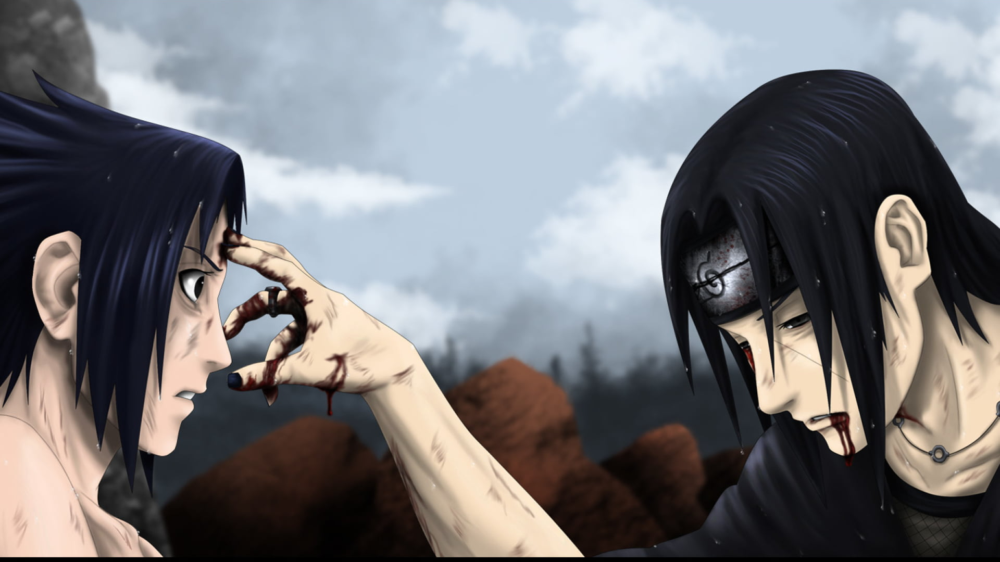

The Legendary Battle: Sasuke vs. Itachi
The Clash of FateSasuke arrived at the Uchiha Hideout and confronted Itachi, initiating an intense battle that began with taijutsu. As Sasuke cornered his brother, he asked about the third person capable of awakening the Mangekyō Sharingan. Itachi revealed that his accomplice in the Uchiha massacre was none other than Madara Uchiha, one of Konoha’s founders and the mastermind behind the Nine-Tails' attack on the village 16 years ago. He also explained that the Mangekyō Sharingan leads to eventual blindness, and the only way to prevent it is by transplanting another's Sharingan, which was why he had kept Sasuke alive—to make him strong enough to take his eyes. The battle so far had been a series of genjutsu tricks, but Itachi finally activated his Mangekyō Sharingan for real. Itachi attempted to take Sasuke’s eyes using Tsukuyomi, but Sasuke managed to break free. Sasuke then lectured Itachi on how a ninja’s tools are only as powerful as their wielder. The fight escalated as both used the Great Fireball Technique, with Sasuke holding a slight advantage until Itachi unleashed Amaterasu, burning through Sasuke’s cursed seal wing and severely injuring him. Just as Itachi moved to take his eyes, Sasuke tricked him by leaving behind an empty shell and reappeared below, launching the Fire Release: Great Dragon Fire Technique, which burned Itachi’s arm. As rain began to pour, Sasuke prepared his final attack, Kirin, a massive lightning-based technique fueled by the residual heat from his previous attacks. Striking Itachi directly, Sasuke believed he had won. However, Itachi survived by activating Susanoo, a third Mangekyō Sharingan technique, which granted him the legendary Sword of Totsuka. As Sasuke ran out of chakra, he could no longer suppress Orochimaru, who had been inside him since their previous battle. Orochimaru emerged from a giant snake, but before he could act, Itachi used the Sword of Totsuka to seal him in an eternal dream state. The remains of Orochimaru were sucked into the Sake jar in which the sword was sheathed, permanently removing his presence. As the battle reached its climax, Itachi, despite his injuries, continued to advance toward Sasuke, seemingly victorious.
Itachi
Meanwhile, Naruto and the other members of the Eight Man Squad continued to fight Tobi. Shino attacked with his bugs, and even managed to completely swarm Tobi with them. Tobi escaped from the swarm unharmed, however. Zetsu arrived to tell him that Sasuke had won the battle, and that Itachi was dead. This was no surprise to Tobi. Zetsu also said that Sasuke was probably dying as well. Just before Tobi and Zetsu left, Kakashi noticed Tobi's Sharingan. Kakashi commented on this while Tobi and Zetsu fled to the battle-site. Hinata saw storm-clouds and the flames of Amaterasu with her Byakugan. Naruto and the group pursued them. Meanwhile, Tobi and Zetsu reached Sasuke. Tobi told Zetsu to take Itachi's corpse. Naruto's team reached the flames, and Yamato used Earth Release: Earth Flow Divide to create a path through it. Naruto became angry when he realised that they were too late.